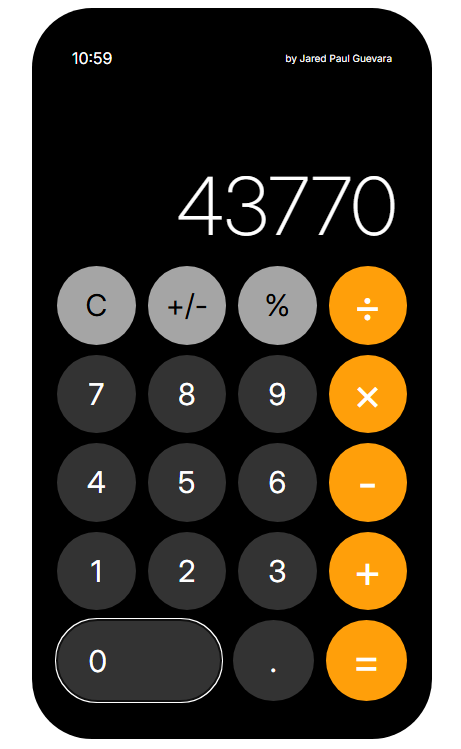
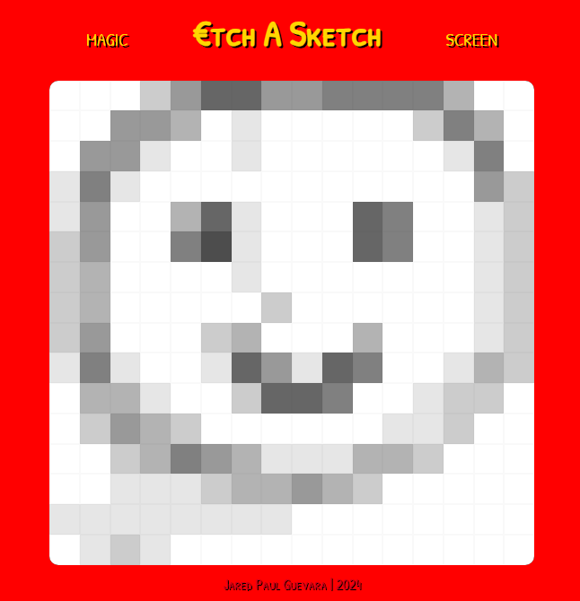
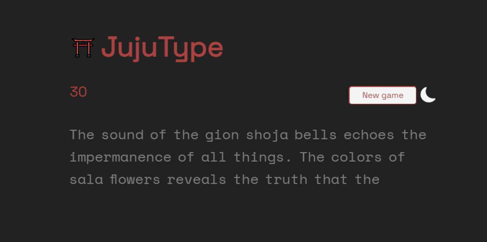

projects
The KCL Diagnostic Tool is a tool that allows users of the
Kinesis Client Library to diagnose and troubleshoot issues with their KCL applications.
Developed during my AWS Summer 2025 Internship.
Built in Python with CloudWatch/DynamoDB.

Calculadora is a browser-based calculator application, capable of basic mathematical
operations. Inspired by the iOS calculator app and developed as part of The Odin Project curriculum.
Built in HTML/CSS/JavaScript.

Etch-A-Sketch is a browser-based drawing application, allowing users to
the cursor to draw on an increasingly opaque canvas. Inspired by the classic toy
and developed as part of The Odin Project curriculum.
Built in HTML/CSS/JavaScript.

The Natural Disaster Classifier is a set of computer vision models, trained to classify and
differentiate between natural disaster images and their apparent damage level. Developed as the final project
for UC Berkeley's Data 200S: Principles and Techniques of Data Science.

JujuType is a speed typing game inspired by Monkeytype and my favorite anime, Jujutsu Kaisen.
Built in HTML/CSS/JavaScript.